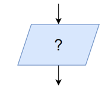
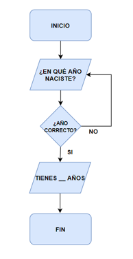
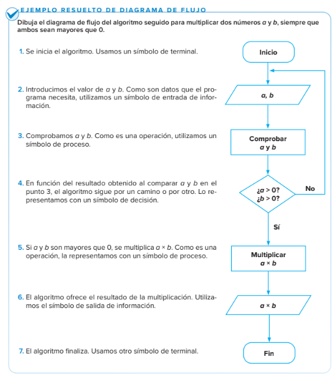
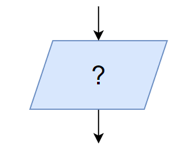
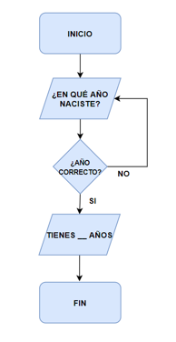
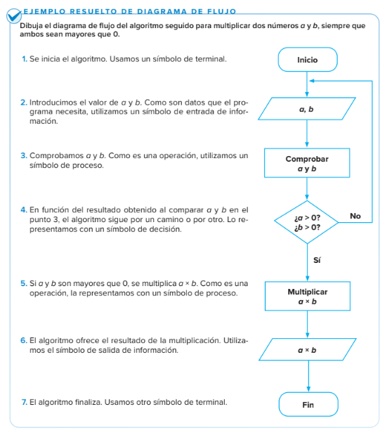

¿Qué son los bloques de entrada y salida?
En algunos algoritmos pedimos datos o sacamos datos por la pantalla, para ello utilizamos el bloque Entrada / Salida.
Veamos un ejemplo:

Aquí tienes otro ejemplo:

En algunos algoritmos pedimos datos o sacamos datos por la pantalla, para ello utilizamos el bloque Entrada / Salida.
Veamos un ejemplo:

Aquí tienes otro ejemplo:

Dibuja en tu cuaderno el diagrama de flujo del Algoritmo seguido para sumar dos números comprendidos entre el 1 y el diez.
Cuando lo hayas diseñado utiliza la siguiente aplicación web para dibujarlo: https://app.diagrams.net/
¿Quieres ser el director o directora de tu instituto?
Para ser el director o directora de tu instituto
tienes que tomar decisiones.
Por ejemplo: ¿a qué hora quieres el recreo?
Para tomar decisiones es importante saber
la opinión de otras personas.
Por ejemplo: Preguntar a los maestros y maestras a qué hora quieren
el recreo.
Ejemplo: Una profesora prefiere el recreo a las 11,
un profesor prefiere el recreo a las 11 y cuarto,
y otra maestra prefiere el recreo a las 11 y media.
Las opiniones de las personas son nuestros datos.
En nuestro ejemplo los datos son: 11 horas, 11 y cuarto y 11 y media.

Los datos se recogen con un cuestionario.
¿Qué vas a aprender en esta tarea?
En esta tarea vas a aprender a:
.
Un cuestionario
son las preguntas que hago
a las personas para conocer
su opinión
2. Elegir las personas a las que preguntar.
3. Preguntar a esas personas su opinión
4. Resumir con gráficos los cálculos.
5. Resumir con gráficos los cálculos.

6. Tomar decisiones es elegir entre varias opciones la más adecuada.
Por ejemplo: El director o la directora decide que la hora del recreo
es a las 11 y media horas porque hay más maestros y maestras que prefieren esa
hora.
Obra publicada con Licencia Creative Commons Reconocimiento No comercial Compartir igual 4.0